Welcome to the online help of the plug-in which shows how the validation of signatures and certificates works according to three different validity models:
Below you find an overview of the plug-in and a more detailed description of the usage of the plug-in. At the end there is a short description of the validity models.
A statement saying a signature is valid or not depends on different things – some are independent of whether the message was changed or not:
All 8 points in time can be manipulated via sliders, and then a validation can be processed again.
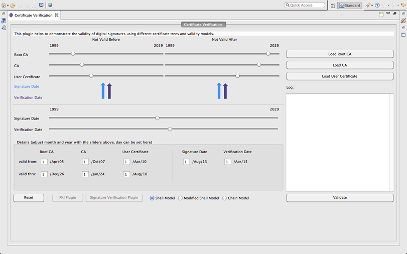
Clicking on the "Reset" icon in the upper right corner, everything is reset to the initial state of the plug-in.
Below you find how to use the plug-in on the basis of an example scenario.
For all 8 points in time the plug-in has set meaningful values when you start the plug-in:
Root CA: Jul-01, 2010 - Mar-01, 2032
CA: Jan-01, 2013 - Sep-01, 2029
User: Jul-01, 2015 - Nov-01, 2023
Signing date: Nov-01, 2018
Verification date: Jul-01, 2020
Alternativly, you can take the points of time from certificates stored in JCT. If you click on the buttons "Load Root CA", "Load CA" and "Load User Certificate" a dialog window opens and you can choose the certificate, which you want to load out of the JCT keystore. After you have chosen the right certificate you have to click on "finish". The sliders in the graphical user interface (GUI) are now in the right position and the font color of the buttons is now green. Please note that these changes are just a simulation. That means: No certificates are changed and no new certificates are created.
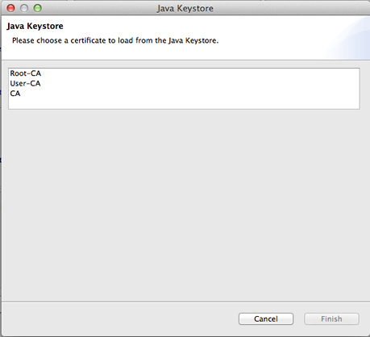
If all three certificates (Root CA, Intermediate CA, and User CA) were loaded successfully you can choose the validity model with the radio buttons. Now you can press the "Validate" button. If the symbol next to this button is an X in a red circle the validation was unsuccessful if the symbol is a checkmark in a green circle the validation was successful.
The log shows you all the information, which leads to this result.
Selection of the validity model:
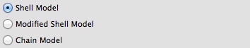
Successfully validated:
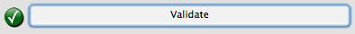
Unsuccessfully validated:
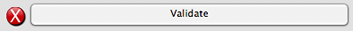
Log:
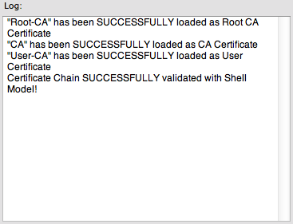
In order to simulate what happens if the dates change you can move the sliders for each certificate, for the signing date and for the verification date.
The sliders adjust only the months of a date. If you want to set the days too you can do this with the text fields in the grouping "Details of the points in time". After the modification of a slider the font color of the buttons "Load Root CA", "Load CA", and "Load User Certificate" changes to orange.
The arrows in light blue below the sliders for the validity period of the 3 certificates show the signing date, and the purple arrows show the verification date.
Sliders:
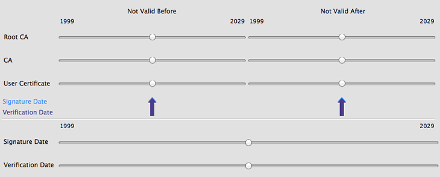
Details of the points in time:
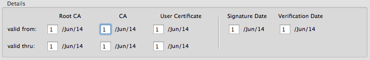
Validity models describe, which requirements have to be fulfilled at certain points of time to consider a signature as valid. These models are the shell model, a modified version of the shell model, and the chain model.
When using the shell model, a key(-pair) is valid at a certain time, if the corresponding certification path is also valid at this time. The certification path is valid, if all contained certificates are valid at this time.
A certificate is valid, if
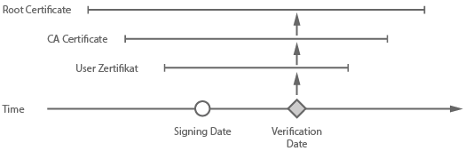
The modified shell model is, with the exception of a special condition, equivalent to the shell model, which is described above. The difference is, that when the check of a certification path is performed, the signing date of a document is used. This is normally used in Europe.
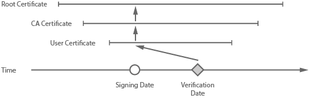
In the chain model, the only requirement is, that each certificate had to be valid at the moment it was used to create a signature. This means that: at the signing time of a document, the client's certificate had to be valid, at the time when the clients' certificate was issued, the issuing CA's certificate had to be valid and so on. This model does not consider if a certificate was revoked since the signing time.
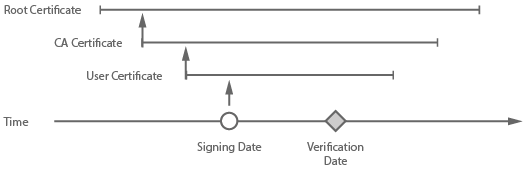
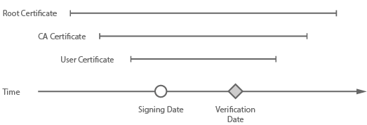
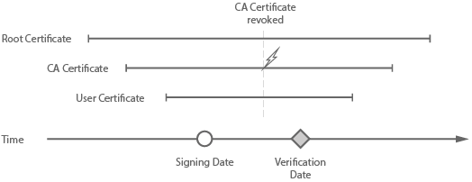
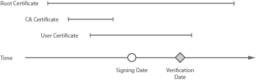
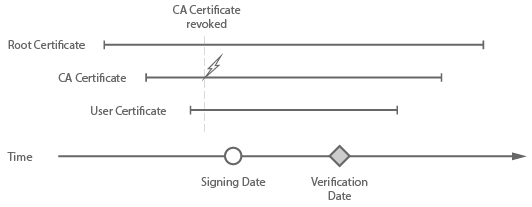
You can notice the following: Depending on the validity model, a signature can be evaluated as invalid, if just the validation point of time is changed. It's astonishing that even if the message and the according signature didn't change, you today can get the evaluation result that the signature is valid, and tomorrow that the signature is invalid. One of the reasons that the simple shell validity model was no success was, that this was unintelligible for users.